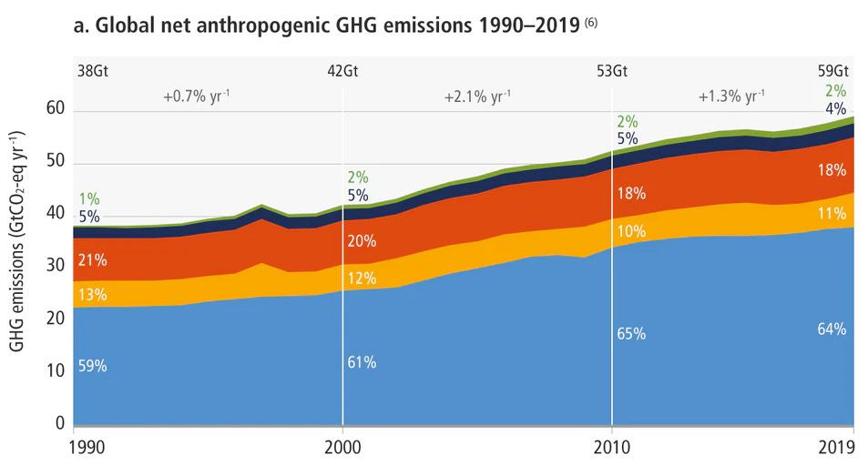
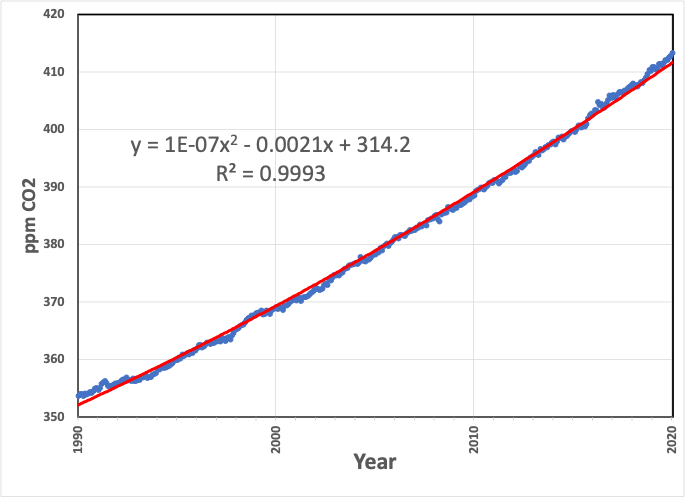
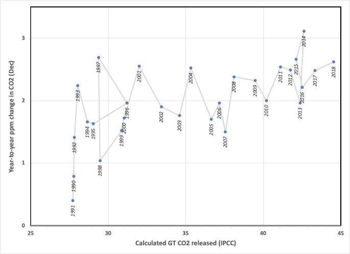
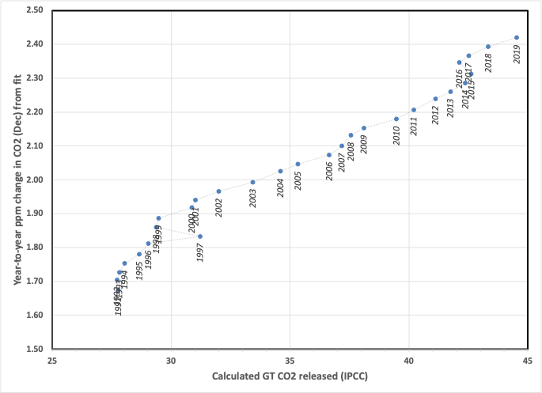

You can read Healing for free, and you can reach me directly by replying to this email. If someone forwarded you this email, they’re asking you to sign up. You can do that below.
If you really want to help spread the word, then pay for the otherwise free subscription. I use any money I collect to increase readership through Facebook and LinkedIn ads.
Today’s read: 7 minutes.
No intro quote today. I’m running short on time and have just started to dig into the final installment of the IPCC AR6 report from “Working Group III”. So to refresh or introduce this esteemed group of 83 authors to you all:
The Working Group III (WG III) contribution to the IPCC’s Sixth Assessment Report (AR6) assesses literature on the scientific, technological, environmental, economic and social aspects of mitigation of climate change.
This part is the “What are we supposed to do about it?” part of the report, aka “mitigation”.
In the very first summary statement, opening the Summary for Policy Makers, I was surprised to find the conclusion:
Total net anthropogenic GHG emissions have continued to rise during the period 2010 – 2019, as have cumulative net CO2 emissions since 1850. Average annual GHG emissions during 2010-2019 were higher than in any previous decade, but the rate of growth between 2010 and 2019 was lower than that between 2000 and 2009. (high confidence)
That’s interesting if true. If our current efforts measurably reduce the growth rate (acceleration, not speed) of human-caused (anthropogenic) emissions, then perhaps there’s a sliver of hope or a guidepost that we’re doing something right. My earlier analysis of the primary Mauna Loa data led to a different conclusion, namely that, when measured directly in the atmosphere far from interferences, the CO2 emissions have been accelerating at the same rate since 1960.
When two sets of data disagree, there’s a learning opportunity. So, let’s compare the data sets to see where there are differences. The first difference is that the IPCC report compiles “average net annual anthropogenic GHG emissions”, while the Mauna Loa data deals exclusively with CO2 levels, so different things are measured. The IPCC even divides CO2 into two bins, CO2 from geologic carbon combustion and net CO2 from our land use (labeled as CO2-FFI and CO2-LULUCF). But, again, I reiterate—it’s the same gas no matter where it comes from!
So here’s what the report summarizes for “policymakers”:

The data is significantly noisier than the primary CO2 data over the same period:

The differences in the data sources are pronounced: The IPCC diagram comes from a massive compilation of data provided by each UN member country (so it omits large non-UN economies like Taiwan). The Keeling data is measured directly with analytical precision, irrespective of source, at a single location with a calibrated instrument. In the IPCC’s primary data file, there are 589,906 records spanning gas emissions from 1970 to 2019 and indirect effects of land-use changes dating to 1850. It’s essentially impossible to critique such a dataset comprehensively, particularly in a short piece, because of the vast disparity in sources and assumptions. But if we look at CO2 from fossil fuel emissions and drill down to ask, “Where did this number come from?” it’s a fascinating, worthwhile journey. The IPCC relies on a published article 1 , which depends on an internet database called EDGAR (Emissions Database for Global Atmospheric Research), which gets its numbers from the International Energy Agency . That is the primary source. In documenting its origins, the IEA states :
For the calculation of CO2 emissions from fuel combustion, the IEA uses a Tier 1 method. Countries may be using a more sophisticated Tier 2 or Tier 3 method that takes into account more detailed country-specific information available ( e.g. on different technologies or processes).
Energy activity data based on IEA energy balances may differ from those used for the UNFCCC [UN Framework Convention on Climate Change] calculations.
Countries often have several “official” data sources such as a Ministry, a Central Bureau of Statistics, a nationalised electricity company, etc. Data can also be collected from the energy suppliers, the energy consumers or customs statistics. The IEA Secretariat tries to collect the most accurate data, but does not necessarily have access to the complete data set that may be available to national experts calculating emission inventories for the UNFCCC. In addition to different sources, the methodology used by the national bodies providing the data to the IEA and to the UNFCCC may differ. For example, general surveys, specific surveys, questionnaires, estimations, combined methods and classifications of data used in national statistics and in their subsequent reclassification according to international standards may result in different series.
Translation: To get estimates for CO2 emissions from gasoline use (for example), the IEA collects “official” government reports from countries as diverse as Afghanistan and Zimbabwe. Each country’s bureaucracy tabulates how much gasoline their country consumes. Then, the IEA multiplies these numbers by a factor to determine how much CO2 is emitted due to that country’s gasoline use. (That’s what the IEA means by a “Tier 1” calculation.) This process is repeated annually for each source of emissions and each country. [It’d be interesting to look into whether some countries changed their reporting rules when the UN decided to track the outcome and tie it to international accords! It’s like asking students to grade their own exams—Honesty is assumed, but experience suggests otherwise.]
Regardless, the data question du jour is, “Does the annual increase observed at the observatory at Mauna Loa correlate to the annual increase of carbon dioxide compiled by IPCC (as the result of human activity)? Because we have already established that the year-over-year increase in CO2 is primarily due to human activity , we should be able to learn something from any inconsistency. 2 What do we see?

The two values roughly correlate, as expected, so it’s consistent with human origins, but the correlation (or perhaps my analysis) is pretty noisy. For example, in 1996, 2006, 2010, and 2013, the CO2 levels recorded on Mauna Loa increased by two ppm from one December to the next, despite a 50% increase in annual emissions from 1996 to 2013. That doesn’t make sense. So, to adjust for noise in the analytical data, I repeated the analysis with curve fit numbers, and the picture sharpens:

Now, 1997 appears to have an abnormal increase in reported CO2, which dropped to more “normal” levels in 1998, and in 2016, less CO2 release was reported, yet observed levels still rose.
I won’t speculate about the reasons behind these anomalies. Still, I suspect that hidden changes in governmental accounting are the cause. For example, a quick analysis comparing 1998 with 1997 suggests that reported increases in CO2 emissions by both China and the US were almost entirely offset by reported decreases in emissions in South Korea and Japan. This offset is surprising (to me) because of the relative sizes of the economies involved. [To be exact, in 2022, South Korea and Japan combined represented 15% of the GDP of China and the US combined.]
Let’s return to the opening assertion by IPCC WG III, “ Average annual GHG emissions during 2010-2019 were higher than in any previous decade, but the rate of growth between 2010 and 2019 was lower than that between 2000 and 2009 .” This assertion is supported by a numerically significant data set. Still, the conclusion does not appear to be relevant to the primary cause of global warming, namely, combustion of geologic carbon sources. There are far too many potential sources of error (particularly in data validation) for that statement to be made with “high confidence”. It may be statistically significant, but statistics can be deceptive when applied to data not collected consistently.
Minx et al., “A comprehensive dataset for global, regional, and national greenhouse gas emissions by sector 1970-2019”, Earth System Science Data, 2021. doi.org
For the sticklers in the audience, the CO2 redistributes through terrestrial capture (photosynthesis) and marine dissolution. This analysis neglects these processes. I’d argue that these are too fast and too slow, respectively, to affect the reading on the “meter”.